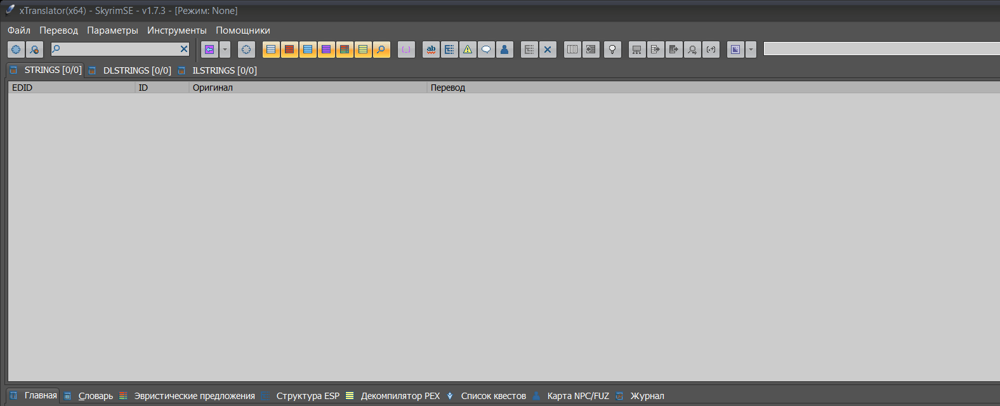

🛠 О программе
xTranslator — единый инструмент для перевода модов Skyrim, Skyrim Special Edition, Starfield, Fallout 4, Fallout 76 и Fallout: New Vegas. Различные названия (tesvTranslator, sseTranslator, fallout4Translator и др.) — это в основном пресеты рабочего пространства и путей; переключать игру можно прямо в программе.
Инструмент предназначен для перевода и сопровождения модов: от отдельных строк до крупных локализаций. Он работает со строками плагинов, STRINGS-файлами, Papyrus-скриптами, MCM-меню, звуковыми fuz-файлами и архивами BSA/BA2.

⚠️ Важные предупреждения
xTranslator не предназначен для прямой локализации или делокализации файлов *.esp / *.esm. Для этих задач используйте xEdit (TES5Edit / SSEEdit / FO4Edit / SF1Edit).
Автоматический string-to-string перевод не применяется к VMAD по умолчанию, так как ошибка в свойствах VMAD может сломать мод. Переводите VMAD только осознанно — см. гайд по VMAD в туториале.
Ответы на частые вопросы и ссылки на оригинальные статьи Nexus — на странице FAQ.
📑 Режимы редактирования
| Режим | Описание |
|---|---|
| ESP-режим | Прямое редактирование esp/esm/esl и их строк. Между записями можно переключаться двойным щелчком; отображается список полей записи. |
| STRINGS-режим | Работа только с *.strings / *.dlstrings / *.ilstrings без изменения esp/esm. Устаревший режим; рекомендуется использовать Гибридный режим. |
| Гибридный режим | esp выступает структурой записей и полей для прямого редактирования строк. STRINGS-файлы должны лежать рядом с esp в папке .\strings. |
MCM/Перевод (Load_MCMmenu) | Перевод текстов интерфейса модов (SkyUI) и оригинальных UI-строк игры: «Загрузить MCM/Перевод файла» (в новых версиях — «Загрузить файл MCM/Текст пользователя»). |
| Скрипты Papyrus / PEX | Перевод PEX-скриптов через встроенный декомпилятор PEX или внешний (например, Champollion). Внутренние переменные блокируются от случайного изменения. |
⚙️ Основные возможности
| Возможность | Краткое описание |
|---|---|
| Словари SST | Построение и применение баз перевода из существующих файлов строк и плагинов (меню «Словарь»). |
Сравнить ESP (Esp_Compare) | Перенос перевода между версиями модов на разных языках через сопоставление FormID (в исходниках — espCompare). |
Эвристический перевод (Heuristic) | Поиск похожих строк и подсказки «на лету» (расстояние Левенштейна). |
Карта FUZ (FuzMap) | Привязка и прослушивание аудиореплик (.fuz, .wav, .xwm). |
Просмотр различий (Diff_Viewer) | Наглядное отображение различий между исходными и обновлёнными строками. |
Проверка псевдонимов (Alias_Check) | Контроль целостности тегов <Alias> между оригиналом и переводом. |
| RegEx-инструменты | Поиск, замена и перевод по шаблонам регулярных выражений («Инструмент перевода RegEx»). |
| Проверка орфографии | Встроенная проверка через MS Word или словари Hunspell/OpenOffice. |
API перевода (TranslationApi) | Интеграция с DeepL, MsTranslator, Google, OpenAI, Youdao, Baidu, Ollama. |
Пользовательский словарь (Custom_Dic) | Формирование словарных пар прямо в процессе работы. |
| XML-обмен | «Экспортировать перевод» / «Импортировать перевод» — полноценный XML для совместной работы. |
| BSA / BA2 | Прямое извлечение строк и скриптов из контейнеров BSA / BA2. |
TAG/ID (FormColabId) | Метки для совместных переводов больших модов (ранее Collab ID). |
Обработка заголовков (HeaderProcessor) | Автоматическая сортировка предметов и добавление заголовков/тегов. |
🔌 Настройка API перевода
xTranslator умеет отправлять строки в различные онлайн-сервисы перевода. Настройки API находятся в файле xTranslator\Misc\ApiTranslator.txt и в панели Параметры → API перевода (Options → TranslationApi).
Быстрые эндпоинты из ApiTranslator.txt
| Сервис | URL эндпоинта | Примечание |
|---|---|---|
| DeepL (бесплатный) | https://api-free.deepl.com/v2/translate | Pro-аккаунт: api.deepl.com |
https://translate-pa.googleapis.com/v1/translateHtml | Бесплатный эндпоинт, стабильность не гарантируется | |
| MsTranslator (Azure) | https://api.cognitive.microsofttranslator.com/translate?api-version=3.0 | Требуется ключ Azure Cognitive Services |
| OpenAI | http://127.0.0.1:8080/v1/chat/completions | Совместимый эндпоинт; ключ прописывается в настройках |
| Ollama | http://127.0.0.1:8080/ollama/v1/chat/completions | Локальный сервер; API-ключ не обязателен |
| AiTunnel | https://api.aitunnel.ru/v1/chat/completions | OpenAI-совместимый прокси |
| GPTunnel | https://gptunnel.ru/v1/chat/completions | OpenAI-совместимый прокси |
| Youdao | http://openapi.youdao.com/api | Требуется appKey и sign |
| Baidu | http://api.fanyi.baidu.com/api/trans/vip/translate | Требуется appid, salt, sign |
Локальные и облачные LLM
- LM Studio / Ollama: запустите локальный сервер на
127.0.0.1:8080(или другом порте), выберите модель в настройках xTranslator. Подходит для офлайн-перевода при наличии мощной видеокарты. - AiTunnel / GPTunnel / OpenRouter: облачные OpenAI-совместимые провайдеры. Позволяют использовать современные модели без собственного железа.
- DeepL / Google / Bing: классические нейро/статистические переводчики. Лучше всего подходят для коротких игровых строк, но могут «съедать» теги форматирования — всегда проверяйте результат.
*_CharLimit), таймауты (*_TimeOut), размер пакета (*_ArrayLimit) и паузы между запросами (*_ArrayTimePause). Для локальных моделей увеличьте таймаут до 120 000 мс.
📦 Сторонние компоненты
- SynEdit: github.com/SynEdit/SynEdit
- VirtualStringTree: автор Mike Lischke — soft-gems.net
- Diff Unit: модуль для эвристического сравнения текста, автор Angus Johnson — angusj.com
- HtmlViewer: github.com/BerndGabriel/HtmlViewer
- ZLibex 1.2.3: dellapasqua.com и xEdit
- LZ4: github.com/atelierw/LZ4Delphi и xEdit
- Часть алгоритмов чтения BSA/BA2/Stream заимствована из xEdit
- OmniXML: github.com/mremec/omnixml
- PCRE Regex library: regular-expressions.info (Unicode-версия)
- Hunspell: github.com/hunspell/hunspell (MPL 1.1)
- xWMAEncode.exe: утилита из DirectX SDK (Microsoft)
- Madshi Exception Handler: madshi.net (некоммерческая версия)
Особая благодарность: Bethesda, команде TES5Edit/xEdit, Alexander Blade (OpCode Fallout 4 для Pex), сообществу моддеров.
🕑 История версий (ключевые релизы)
- API перевода: изменён эндпоинт для Google (бесплатный).
- Обновлён японский и итальянский интерфейс.
- API перевода: добавлена поддержка Ollama и опция TimeOut для каждого API.
- Корректная поддержка Starfield Small/Medium ESM, нормализация FormID.
- «Сравнить ESP» улучшено для light/medium модов Starfield.
- Добавлен ShatteredSpace.esm в словарь Starfield.
- Обновлено определение BSA для Starfield.
- Переход на Delphi 12.1 CE, обновлены VirtualTree и HtmlViewer.
- Инструмент перевода RegEx: поддержка
\rи\nкак явных символов конца строки. - Полная поддержка Small/Medium основных модулей для Starfield.
- Добавлена поддержка OpenAI API.
- Подсказка для виджета счётчика перевода (
TranslationMeter).
- Добавлена пакетная обработка (
batchProcessor). - Ускорен эвристический перевод.
- Полная поддержка DPI для мониторов с высоким разрешением.
- Система автосохранения словарей в
_xTranslator\UserDictionaries\[Game]\Auto\.
- Добавлена базовая поддержка Starfield.
- Переработка VMAD: поддержка внешнего декомпилятора PEX (Champollion).
- XML-словари теперь поддерживают VMAD.
- Добавлена панель инструментов (
ToolBox) и пользовательский словарь. - Улучшен кэш производных строк.
- Исправлена работа воспроизведения FUZ.
Полный список изменений см. в файле _UpdateNotice.txt и оригинальном SSTReadMe.htm.